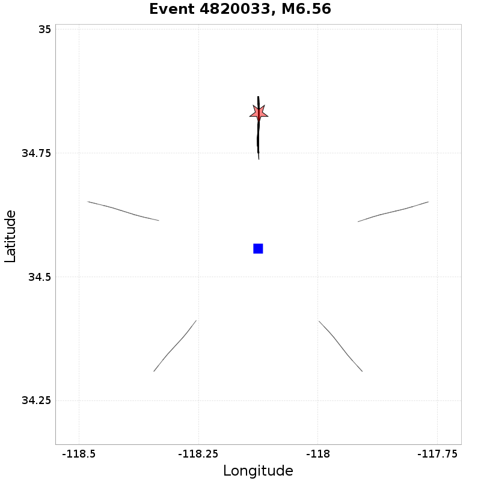
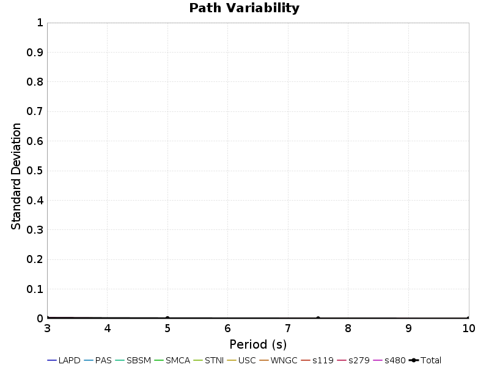
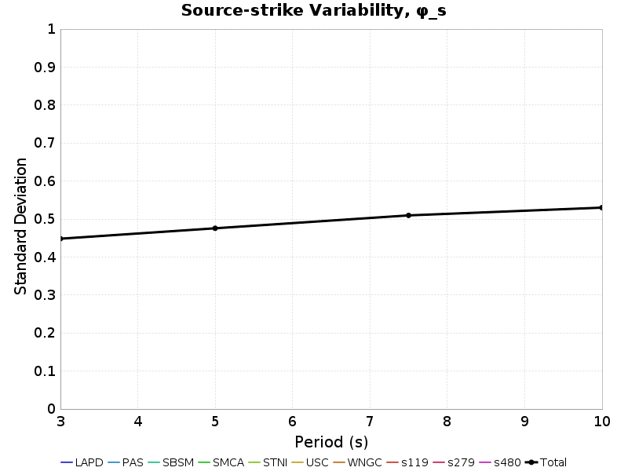
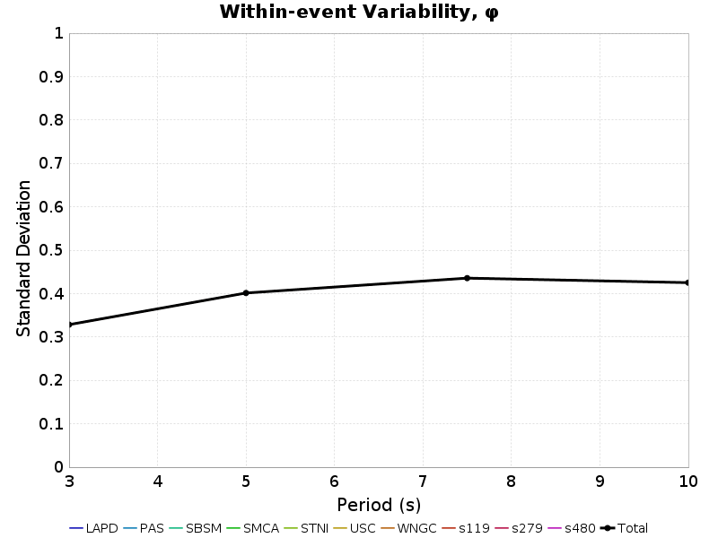

| Events | 100 |
|---|---|
| Sites | 10 |
| Source Rotation Azimuths | 36 |
| Site-To-Source Path Azimuths | 4 |
| Source-Site Distance[s] | 20.0,50.0 km |
| Total # Simulations | 288000 |
| Name | Location | Vs30 (m/s) | Z1.0 (km) | Z2.5 (km) |
|---|---|---|---|---|
| LAPD | 34.557, -118.125 | 863 | N/A | N/A |
| PAS | 34.148426, -118.17119 | 863 | N/A | N/A |
| SBSM | 34.064987, -117.29201 | 863 | N/A | N/A |
| SMCA | 34.00909, -118.48939 | 863 | N/A | N/A |
| STNI | 33.93088, -118.17881 | 863 | N/A | N/A |
| USC | 34.0192, -118.286 | 863 | N/A | N/A |
| WNGC | 34.041824, -118.0653 | 863 | N/A | N/A |
| s119 | 34.55314, -118.72826 | 863 | N/A | N/A |
| s279 | 34.37809, -118.34757 | 863 | N/A | N/A |
| s480 | 34.15755, -117.87389 | 863 | N/A | N/A |
Path variability, denoted φP2P in Al Atik 2010, is computed from ground motion residuals where the following quantities are held constant:
and the following quantities vary:
Here is an exmample with 5 rotations: 
Standard deviation is computed and tabulated separately for each site and distance, then a total standard deviation is computed from all site and distances and reported in the "ALL SITES" row.

| Site | 3s Std. Dev. | 3s Residual Range | 5s Std. Dev. | 5s Residual Range | 7.5s Std. Dev. | 7.5s Residual Range | 10s Std. Dev. | 10s Residual Range |
|---|---|---|---|---|---|---|---|---|
| LAPD | 0 | [-0.04 0.05] | 0 | [-0.04 0.06] | 0 | [-0.01 0.03] | 0 | [-0.01 0.01] |
| PAS | 0 | [-0.03 0.05] | 0 | [-0.01 0.04] | 0 | [-0.01 0.01] | 0 | [-0.01 0.02] |
| SBSM | 0 | [-0.04 0.05] | 0 | [-0.02 0.03] | 0 | [-0.01 0.02] | 0 | [-0.02 0.02] |
| SMCA | 0 | [-0.04 0.05] | 0 | [-0.02 0.03] | 0 | [-0.02 0.01] | 0 | [-0.02 0.02] |
| STNI | 0 | [-0.03 0.04] | 0 | [-0.02 0.03] | 0 | [-0.01 0.01] | 0 | [-0.02 0.02] |
| USC | 0 | [-0.05 0.05] | 0 | [-0.03 0.04] | 0 | [-0.01 0.01] | 0 | [-0.02 0.03] |
| WNGC | 0 | [-0.04 0.05] | 0 | [-0.02 0.03] | 0 | [-0.01 0.02] | 0 | [-0.02 0.01] |
| s119 | 0 | [-0.05 0.04] | 0 | [-0.04 0.03] | 0 | [-0.01 0.02] | 0 | [-0.02 0.01] |
| s279 | 0 | [-0.05 0.04] | 0 | [-0.02 0.03] | 0 | [-0.01 0.03] | 0 | [-0.02 0.02] |
| s480 | 0 | [-0.03 0.05] | 0 | [-0.02 0.03] | 0 | [-0.03 0.02] | 0 | [-0.02 0.01] |
| ALL SITES | 0 | [-0.05 0.05] | 0 | [-0.04 0.06] | 0 | [-0.03 0.03] | 0 | [-0.02 0.03] |
| Site | 3s Std. Dev. | 3s Residual Range | 5s Std. Dev. | 5s Residual Range | 7.5s Std. Dev. | 7.5s Residual Range | 10s Std. Dev. | 10s Residual Range |
|---|---|---|---|---|---|---|---|---|
| LAPD | 0 | [-0.06 0.09] | 0 | [-0.05 0.02] | 0 | [-0.03 0.03] | 0 | [-0.02 0.02] |
| PAS | 0 | [-0.04 0.09] | 0 | [-0.07 0.03] | 0 | [-0.03 0.02] | 0 | [-0.01 0.02] |
| SBSM | 0 | [-0.11 0.11] | 0 | [-0.04 0.04] | 0 | [-0.02 0.03] | 0 | [-0.02 0.02] |
| SMCA | 0 | [-0.17 0.07] | 0 | [-0.07 0.04] | 0 | [-0.02 0.02] | 0 | [-0.02 0.01] |
| STNI | 0 | [-0.17 0.08] | 0 | [-0.07 0.06] | 0 | [-0.05 0.03] | 0 | [-0.03 0.01] |
| USC | 0 | [-0.17 0.11] | 0 | [-0.07 0.05] | 0 | [-0.04 0.02] | 0 | [-0.02 0.02] |
| WNGC | 0 | [-0.06 0.07] | 0 | [-0.05 0.05] | 0 | [-0.04 0.04] | 0 | [-0.04 0.04] |
| s119 | 0 | [-0.1 0.09] | 0 | [-0.03 0.05] | 0 | [-0.02 0.02] | 0 | [-0.03 0.03] |
| s279 | 0 | [-0.08 0.09] | 0 | [-0.07 0.06] | 0 | [-0.02 0.03] | 0 | [-0.02 0.02] |
| s480 | 0 | [-0.13 0.11] | 0 | [-0.04 0.04] | 0 | [-0.02 0.04] | 0 | [-0.02 0.02] |
| ALL SITES | 0 | [-0.17 0.11] | 0 | [-0.07 0.06] | 0 | [-0.05 0.04] | 0 | [-0.04 0.04] |
Source-strike variability, denoted φs, is computed from ground motion residuals where the following quantities are held constant:
and the following quantities vary:
Standard deviation is computed and tabulated separately for each site, then a total standard deviation is computed from all sites and reported in the "ALL SITES" row.

| Site | 3s Std. Dev. | 3s Residual Range | 5s Std. Dev. | 5s Residual Range | 7.5s Std. Dev. | 7.5s Residual Range | 10s Std. Dev. | 10s Residual Range |
|---|---|---|---|---|---|---|---|---|
| LAPD | 0.41 | [-1.34 1.42] | 0.44 | [-1.6 1.34] | 0.42 | [-1.85 1.35] | 0.41 | [-1.55 1.28] |
| PAS | 0.41 | [-1.34 1.43] | 0.44 | [-1.6 1.34] | 0.42 | [-1.85 1.34] | 0.41 | [-1.55 1.28] |
| SBSM | 0.41 | [-1.34 1.42] | 0.44 | [-1.61 1.34] | 0.42 | [-1.85 1.34] | 0.41 | [-1.55 1.28] |
| SMCA | 0.41 | [-1.34 1.43] | 0.44 | [-1.6 1.34] | 0.42 | [-1.84 1.34] | 0.41 | [-1.54 1.27] |
| STNI | 0.41 | [-1.34 1.43] | 0.44 | [-1.6 1.33] | 0.42 | [-1.85 1.34] | 0.41 | [-1.55 1.27] |
| USC | 0.41 | [-1.34 1.43] | 0.44 | [-1.6 1.33] | 0.42 | [-1.85 1.34] | 0.41 | [-1.54 1.27] |
| WNGC | 0.41 | [-1.34 1.43] | 0.44 | [-1.6 1.34] | 0.42 | [-1.85 1.34] | 0.41 | [-1.55 1.28] |
| s119 | 0.41 | [-1.34 1.43] | 0.44 | [-1.59 1.34] | 0.42 | [-1.84 1.34] | 0.41 | [-1.54 1.28] |
| s279 | 0.41 | [-1.34 1.43] | 0.44 | [-1.6 1.34] | 0.42 | [-1.84 1.34] | 0.41 | [-1.54 1.28] |
| s480 | 0.41 | [-1.34 1.43] | 0.44 | [-1.6 1.34] | 0.42 | [-1.85 1.34] | 0.41 | [-1.55 1.28] |
| ALL SITES | 0.41 | [-1.34 1.43] | 0.44 | [-1.61 1.34] | 0.42 | [-1.85 1.35] | 0.41 | [-1.55 1.28] |
Within-event variability, denoted φ in Al Atik 2010, is computed from ground motion residuals where the following quantities are held constant:
and the following quantities vary:
Standard deviation is computed and tabulated separately for each site, then a total standard deviation is computed from all sites and reported in the "ALL SITES" row.

| Site | 3s Std. Dev. | 3s Residual Range | 5s Std. Dev. | 5s Residual Range | 7.5s Std. Dev. | 7.5s Residual Range | 10s Std. Dev. | 10s Residual Range |
|---|---|---|---|---|---|---|---|---|
| LAPD | 0.33 | [-1.11 1.44] | 0.37 | [-1.39 1] | 0.43 | [-1.51 1.05] | 0.42 | [-1.77 0.97] |
| PAS | 0.33 | [-1.11 1.44] | 0.37 | [-1.39 1] | 0.43 | [-1.51 1.05] | 0.42 | [-1.77 0.97] |
| SBSM | 0.33 | [-1.11 1.45] | 0.37 | [-1.39 1] | 0.43 | [-1.51 1.05] | 0.42 | [-1.77 0.97] |
| SMCA | 0.33 | [-1.11 1.45] | 0.37 | [-1.39 1] | 0.43 | [-1.51 1.05] | 0.42 | [-1.77 0.97] |
| STNI | 0.33 | [-1.11 1.45] | 0.37 | [-1.39 1] | 0.43 | [-1.51 1.05] | 0.42 | [-1.77 0.97] |
| USC | 0.33 | [-1.11 1.45] | 0.37 | [-1.39 1] | 0.43 | [-1.51 1.05] | 0.42 | [-1.77 0.97] |
| WNGC | 0.33 | [-1.11 1.44] | 0.37 | [-1.39 1] | 0.43 | [-1.51 1.05] | 0.42 | [-1.78 0.97] |
| s119 | 0.33 | [-1.11 1.44] | 0.37 | [-1.39 1] | 0.43 | [-1.51 1.05] | 0.42 | [-1.77 0.97] |
| s279 | 0.33 | [-1.11 1.44] | 0.37 | [-1.39 1] | 0.43 | [-1.51 1.05] | 0.42 | [-1.77 0.97] |
| s480 | 0.33 | [-1.11 1.44] | 0.37 | [-1.39 1] | 0.43 | [-1.51 1.05] | 0.42 | [-1.77 0.97] |
| ALL SITES | 0.33 | [-1.11 1.45] | 0.37 | [-1.39 1] | 0.43 | [-1.51 1.05] | 0.42 | [-1.78 0.97] |